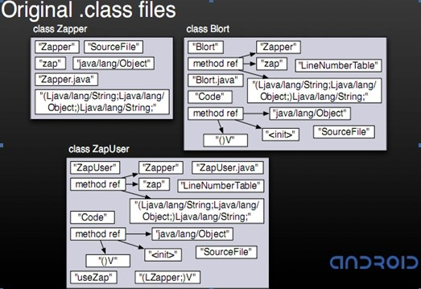
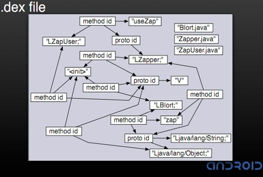
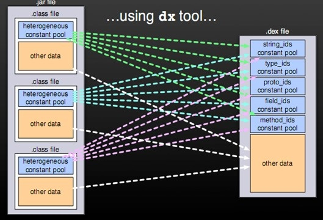
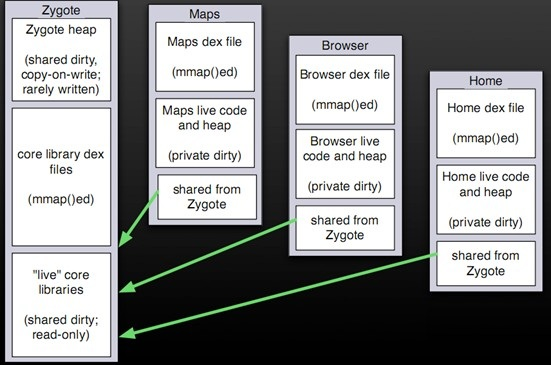
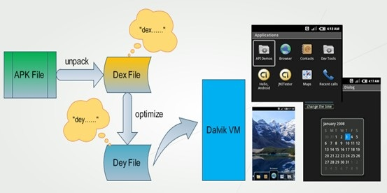
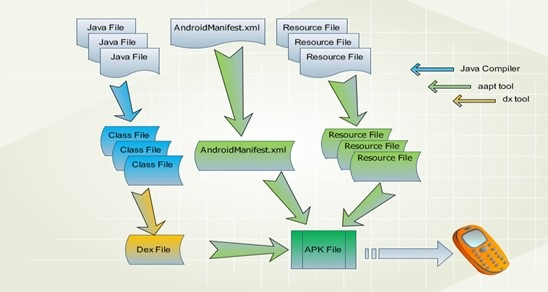

Dalvik虚拟机简介
什么是Dalvik虚拟机
Google于2007年底正式发布了Android SDK，作为Android系统的重要特性，Dalvik虚拟机也第一次进入了人们的视野。它对内存的高效使用，和在低速CPU上表现出的高性能，确实令人刮目相看。依赖于底层Posix兼容的操作系统，它可以简单的完成进程隔离和线程管理。每一个Android应用在底层都会对应一个独立的Dalvik虚拟机实例，其代码在虚拟机的解释下得以执行。很多人认为Dalvik虚拟机是一个Java虚拟机，因为Android的编程语言恰恰就是Java语言。但是这种说法并不准确，因为Dalvik虚拟机并不是按照Java虚拟机的规范来实现的，两者并不兼容，同时还有两个明显的不同：
1、Java虚拟机运行的是Java字节码，而Dalvik虚拟机运行的则是其专有的文件格式DEX（Dalvik Executable）。
2、在Java SE程序中的Java类会被编译成一个或者多个字节码文件（.class）然后打包到JAR文件，而后Java虚拟机会从相应的CLASS文件和JAR文件中获取相应的字节码；Android应用虽然也是使用Java语言进行编程，但是在编译成CLASS文件后，还会通过一个工具（dx）将应用所有的CLASS文件转换成一个DEX文件，而后Dalvik虚拟机会从其中读取指令和数据。
Dalvik和Android系统
Android的系统架构和其操作系统一样，采用了分层的架构。从架构图看，android分为四个层，从上层到低层分别是应用程序层、应用程序框架层、Android运行时和库、linux内核：

如图所示，Android RunTime包括两部分：核心库和Dalvik虚拟机。核心库包括了最基本的类库，如data structure, network, Utilities, File system等的，很多实现代码都是来自Apache Harmony项目，主要目的是保证虚拟机的类库能够和Java SE的类库最大可能的兼容，从而降低应用开发者从Java SE阵营转移到Android开发阵营的难度，增加其可用性。Dalvik虚拟机主要是完成对象生命周期的管理，堆栈的管理，线程管理，安全和异常的管理，以及垃圾回收等等重要功能。
Dalvik虚拟机的主要特征
Dalvik虚拟机非常适合在移动终端上使用，相对于在桌面系统和服务器系统运行的虚拟机而言，它不需要很快的CPU速度和大量的内存空间。根据Google的测算，64M的RAM已经能够令系统正常运转了。其中24M被用于底层系统的初始化和启动，另外20M被用于高层启动高层服务。当然，随着系统服务的增多和应用功能的扩展，其所消耗的内存也势必越来越大。归纳起来，Dalvik虚拟机有如下几个主要特征:
一、专有的DEX文件格式
DEX是Dalvik虚拟机专用的文件格式，而为什么弃用已有的字节码文件（CLASS文件）而采用新的格式呢?
1、一个应用中会定义很多类，编译完成后即会有很多相应的CLASS文件，CLASS文件间会有不少冗余的信息；而DEX文件格式会把所有的CLASS文件内容整合到一个文件中。这样，除了减少整体的文件尺寸，I/O操作，也提高了类的查找速度。原来每个类文件中的常量池，在DEX文件中由一个常量池来管理，具体方式如下图：


2、增加了新的操作码的支持
3、文件结构尽量简洁，使用等长的指令，借以提高解析速度
4、尽量扩大只读结构的大小，借以提高跨进程的数据共享
如何生成DEX文件呢？Android系统和Dalvik虚拟机提供了工具（DX）,在把Java源代码编译成CLASS文件后，使用DX工具。

二、DEX的优化
DEX文件的结构是紧凑的，如果我们还想要求运行时的性能有进一步提高，我们就仍然需要对DEX文件进行进一步优化。优化主要是针对以下几个方面：
1、调整所有字段的字节序（LITTLE_ENDIAN）和对齐结构中的每一个域
2、验证DEX文件中的所有类
3、对一些特定的类进行优化，对方法里的操作码进行优化。
优化后的文件大小会有所增加，应该是原DEX文件的1-4倍。优化发生的时机有两个：对于预置应用，可以在系统编译后，生成优化文件，以ODEX结尾。这样在发布时除APK文件（不包含DEX）以外，还有一个相应的ODEX文件；对于非预置应用，包含在APK文件里的DEX文件会在运行时被优化，优化后的文件将被保存在缓存中。
三、基于寄存器
相对于基于堆栈的虚拟机实现，基于寄存器的虚拟机实现虽然在硬件通用性上要差一些，但是它在代码的执行效率上却更胜一筹。一般来讲，虚拟机中指令的解释执行时间主要花在以下三个方面：
1、分发指令2、访问运算数
3、执行运算
其中“分发指令”这个环节对性能的影响最大。在基于寄存器的虚拟机里，可以更为有效的减少冗余指令的分发和减少内存的读写访问，如：
Exception:a=b+cStack:ILOAD c,ILOAD b,IADD,ISTORE a
Register:IADD a,b,c
虽然Dalvik虚拟机并没有使用目前流行的虚拟机技术，如JIT，但是根据Google的报告，这个功能的缺失并没有让Dalvik虚拟机在性能上有所损失。我们也相信，Dalvik虚拟机的性能还有进一步提高的空间。
四、一个应用，一个虚拟机，一个进程
每一个Android应用都运行在一个Dalvik虚拟机实例里，而每一个虚拟机实例都是一个独立的进程空间。虚拟机的线程机制，内存分配和管理，Mutex等等都是依赖底层操作系统而实现的。所有Android应用的线程都对应一个Linux线程，虚拟机因而可以更多的依赖操作系统的线程调度和管理机制。
不同的应用在不同的进程空间里运行，加之对不同来源的应用都使用不同的Linux用户来运行，可以最大程度的保护应用的安全和独立运行。
Zygote是一个虚拟机进程，同时也是一个虚拟机实例的孵化器，每当系统要求执行一个Android应用程序，Zygote就会FORK出一个子进程来执行该应用程序。这样做的好处显而易见：Zygote进程是在系统启动时产生的，它会完成虚拟机的初始化，库的加载，预置类库的加载和初始化等等操作，而在系统需要一个新的虚拟机实例时，Zygote通过复制自身，最快速的提供个系统。另外，对于一些只读的系统库，所有虚拟机实例都和Zygote共享一块内存区域，大大节省了内存开销。

应用程序包（APK）被发布到手机上后，运行前会对其中的DEX文件进行优化，优化后的文件被保存到缓存区域（优化后的格式被称为DEY），虚拟机会直接执行该文件。如果应用包文件不发生变化，DEY文件不会被重新生成。

Android应用开发和Dalvik虚拟机
Android应用所使用的编程语言是Java语言，和Java SE一样，编译时使用Sun JDK将Java源程序编程成标准的Java字节码文件（.class文件），而后通过工具软件DX把所有的字节码文件转成DEX文件（classes.dex）。最后使用Android打包工具（aapt）将DEX文件，资源文件以及AndroidManifest.xml文件（二进制格式）组合成一个应用程序包（APK）。应用程序包可以被发布到手机上运行。
